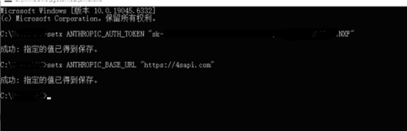
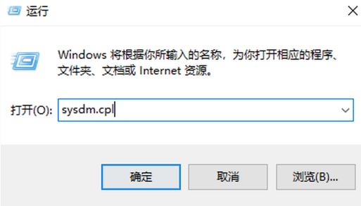
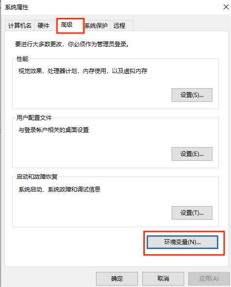
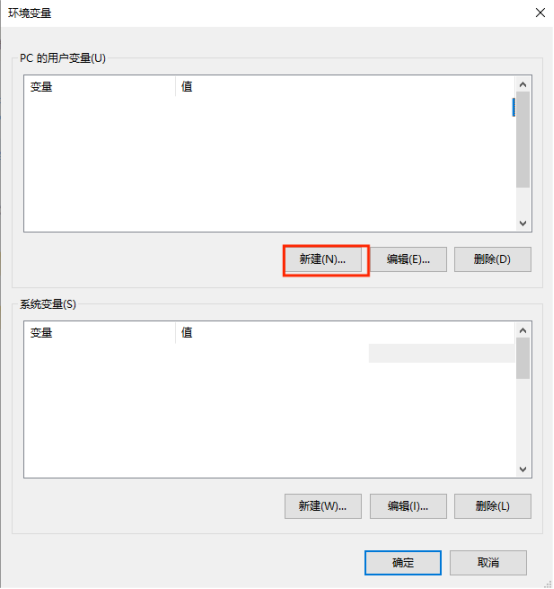
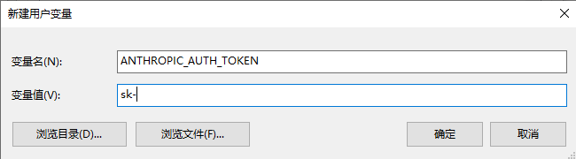
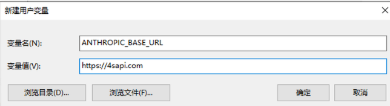
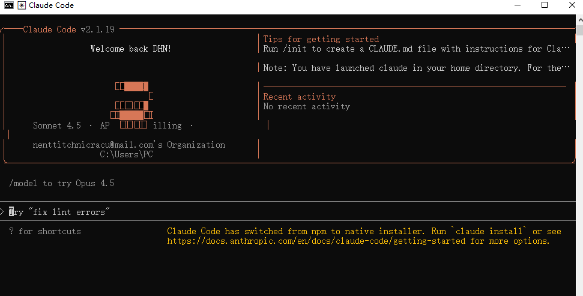

Claude Code 配置教程 (win/mac)¶
Claude Code 配置工具¶
Warning
一个Tokens claude code 的 密钥/令牌（key）
安装 Claude Code：要安装 Claude Code，请按以下两个流程进行:
1. 本地安装¶
macOS, Linux, WSL，Windows PowerShell，Windows CMD:
2. 配置claude code接入方法¶
2.1 配置settings文件
输入以下配置:
{
"env": {
"ANTHROPIC_AUTH_TOKEN": "sk-hUOgVOGw0qdyk*****************",
"ANTHROPIC_BASE_URL": "https://tokens.smartfashionai.cn/",
"ANTHROPIC_DEFAULT_HAIKU_MODEL": "claude-opus-4-6",
"ANTHROPIC_DEFAULT_OPUS_MODEL": "claude-opus-4-6",
"ANTHROPIC_DEFAULT_SONNET_MODEL": "claude-opus-4-6",
"ANTHROPIC_MODEL": "claude-opus-4-6",
"ANTHROPIC_REASONING_MODEL": "claude-opus-4-6"
},
"includeCoAuthoredBy": false
}
2.2 环境变量配置
方式一：使用命令行 (习惯命令行)
打开一个新的终端窗口(win+R,输入cmd回车)：用 setx 进行永久设置 (相当于编辑 .bashrc)操作步骤 (在CMD中打开并执行):
设置第一个变量
设置第二个变量

Warning
重要：设置完成后，你需要关闭所有已经打开的CMD或PowerShell窗口，然后重新打开一个新的窗口，这样新的环境变量才会生效。
方式二：使用图形用户界面 (GUI) (推荐给所有Windows用户)
这是最直观、最不容易出错的方法。打开“系统属性”按键盘上的 Windows 键 + R 键，打开“运行”对话框。输入 sysdm.cpl 然后按回车。

进入“环境变量”设置在打开的“系统属性”窗口中，切换到“高级”选项卡。点击右下角的“环境变量...”按钮。

添加新的用户变量在弹出的“环境变量”窗口中，上半部分是“（您的用户名） 的用户变量”。点击“新建(N)...”按钮。变量名(N): ANTHROPIC_AUTH_TOKEN变量值(V): sk-... (你的密钥)点击“确定”。


重复步骤3: 添加第二个变量再次点击“新建(N)...”。

保存并关闭在“环境变量”窗口点击“确定”。在“系统属性”窗口点击“确定”。
Warning
重要：通过GUI设置完成后，你需要关闭所有已经打开的CMD或PowerShell窗口，然后重新打开一个新的窗口，这样新的环境变量才会生效。
```
3. 开始使用 Claude Code：
cmdVScode打开一个新终端，输入Claude后回车。

Claude Code 为您做什么¶
从描述构建功能：用纯英文告诉 Claude 您想构建什么。它将制定计划、编写代码并确保其正常工作。
调试和修复问题：描述一个错误或粘贴错误消息。Claude Code 将分析您的代码库、识别问题并实施修复。
导航任何代码库：询问有关您团队代码库的任何内容，并获得深思熟虑的答案。Claude Code 维护对整个项目结构的认识，可以从网络上查找最新信息，并且通过MCP可以从 Google Drive、Figma 和 Slack 等外部数据源提取数据。
自动化繁琐任务：修复棘手的 lint 问题、解决合并冲突和编写发行说明。从您的开发机器上用一个命令完成所有这些，或在 CI 中自动完成。
为什么开发者喜欢 Claude Code¶
在您的终端中工作：不是另一个聊天窗口。不是另一个 IDE。Claude Code 在您已经工作的地方与您相遇，使用您已经喜欢的工具。
采取行动：Claude Code 可以直接编辑文件、运行命令和创建提交。需要更多？MCP让 Claude 读取您在 Google Drive 中的设计文档、更新您在 Jira 中的工单，或使用_您的_自定义开发者工具。
Unix 哲学：Claude Code 是可组合和可脚本化的。
tail -f app.log | claude -p "Slack me if you see any anomalies appear in this log stream"有效。
您的 CI 可以运行
claude -p "If there are new text strings, translate them into French and raise a PR for @lang-fr-team to review"